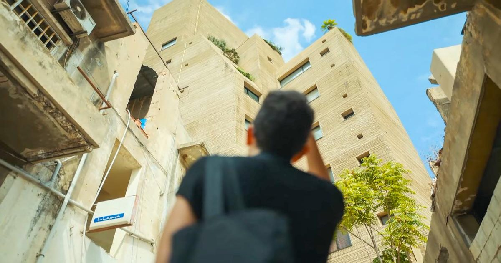

Лина Готме: архитектура как археология будущего
Ливанская архитекторка Лина Готме создаёт здания, где следы прошлого становятся структурой для будущего. Короткий документальный фильм режиссера Стивена Пука разбираёт её метод на примере музея в Эстонии, жилого дома в Бейруте и перестройки Британского музея.
Философия: прошлое как фундамент
Лина Готме формулирует свой подход как «археологию будущего» — практику, где исторический контекст равнозначен физической среде. Она не стирает следы времени, а интегрирует их в материальную логику здания, заставляя память места работать на устойчивость конструкции.
В документальном фильме Стивена Пука архитектор показывает, как глубокое изучение ландшафта и архивов предшествует любой черновику. Этот процесс напоминает тщательную диагностику перед вмешательством: без понимания «анамнеза» места невозможно предложить решение, которое будет жить десятилетиями.
Готме избегает ностальгии и имитации исторических стилей, выбирая стратегию честного диалога с руинами и переплотами эпох. Материалы подбираются так, чтобы они старели красиво, накапливая новую историю поверх старой, а не маскируя её под глянцевую новизну.

Эстонский национальный музей: аэродром как холст
Проект музея в Тарту, завершённый в 2016 году, стал манифестом метода: здание вытянулось вдоль взлётной полосы бывшего советского аэродрома. Архитекторы сохранили ориентацию и масштаб полосы, превратив её в главную ось экспозиции и публичного пространства.
Вместо демонтирования бетонных плит они стали основой для нового программного наполнения — галерей, депо и открытых площадок. Так тяжелое наследие военной инфраструктуры приобрело культурную функцию, не потеряв свою материальную правдивость и грубую эстетику.
Форма здания, поднимающаяся над землёй как взлетающий самолёт, метафорически завершает историю места. Посетитель движется по траектории бывшего взлёта, переживая переход от подавленного ландшафта к открытости знания и национальной идентичности.

Stone Garden: фасад как свидетельство
Жилой дом Stone Garden в Бейруте, завершённый в 2020 году, отвечает на травму города языком геометрии и растительности. Фасад пронзен нерегулярными отверстиями, застёкленными и заполненными зелёными насаждениями, которые архитектор называет «шрамами» от пуль и обстрелов.
Эти проёмы не имитируют разрушение — они структурируют его, превращая хаос насилия в ритмичный узор, где жизнь в виде деревьев и кустарников пробивается сквозь бетон. Балконы-сады становятся личными оазисами в густонаселённом квартале, возвращая жителям контакт с природой.
Материальность здания — бетон цвета местной земли — усиливает эффект принадлежности ландшафту. Дом не контрастирует с окружением, а вырастает из него, фиксируя боль прошлого и одновременно предлагая модель устойчивой плотной застройки для будущего.
Западное крыло Британского музея: чувствительность к контексту
Текущая работа Готме над перестройкой Западного крыла Британского музея в Лондоне требует особой этики: речь идёт о трети всей галерейной площади и коллекциях, истории которых часто связана с колониальным прошлым. Архитектор подходит к задаче как к восстановлению справедливости по отношению к предметам и пространству.
Концепция предполагает создание «призраков» утерянных артефактов и переосмысление света и геометрии залов, чтобы посетитель чувствовал присутствие отсутствующего. Это не реставрация в привычном смысле, а попытка дать голос тем нарративам, что были заглушены имперской логикой экспозиции.
Готме настаивает на том, что музей должен стать местом диалога, а не хранилищем трофеев. Новая планировка и материаловая палитра ориентированы на долговечность и адаптивность, позволяя будущим поколениям кураторов пересматривать экспозицию без разрушения архитектурной оболочки.
Коротко: Лина Готме демонстрирует, как архитектура может лечить городскую ткань через честную работу с памятью места, превращая шрамы истории в несущие конструкции будущего.
Какое здание в вашем городе, по вашему мнению, лучше всего справилось с задачей сохранения исторической памяти при современной перестройке?